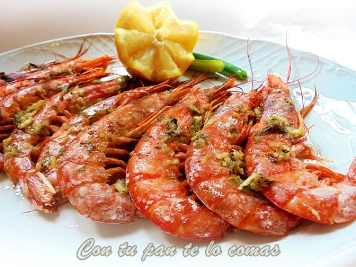

El arroz frito con verduras en un plato típico de la gastronomía china que consiste en saltear arroz cocido a fuego alto y muy rápido con salsa de soja. En esta receta, aparte de las verduras, también vamos a utilizar tofu, un producto a base de soja que se utiliza en la preparación de las comidas veganas por su alto contenido de proteína vegetal. Ver más...
Cook Manía
Recetas de Primera
Favoritos:


Arroz Frito
27, Agosto, 2017
Invitado: Gracias a esa receta pude preparar un cena maravillosa.
Langostinos
24, Agosto, 2017

Los gambones o langostinos forman parte de esos aperitivos o entrantes en los que siempre pensamos para cualquier celebración. Actualmente contamos con un buen producto congelado con lo que además nos sale barato, de manera que no hay que gastar mucho para disfrutar de este marisco que le gusta a todo el mundo. Ver más...
Invitado: Deliciosa receta, muchas gracias.